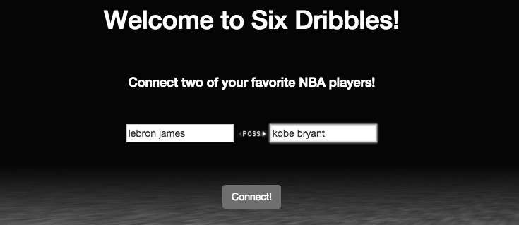

projects
My beliefs on choosing good projects:
Balance the technologies/frameworks used.
Your blog and projects will shape you
Resume: before and after

Projects and Skills will take up 50% of your resume
Projects will be your starting point at interviews
Love aspects about project
Allow your teammates to have aspects they love.
Spend time to come to consensus

Teach the project internally
Share the project publicly
Hosting is a big bottleneck
Consider a staging site
Plan or talk about ways to grow
Receptacle answers where does this unwanted item go?

Current Features & Stack
Angular Application
Visuals & UX/UI Emphasis
Future Features, Stack, & Opportunities
Redis Key Value - Pair Database (EARN)
User Input Option
Video-ke is a dual video player with crossfader powered by .

Current Features & Stack
jQuery UI Bootstrap
iFrame API
Crossfader feature
Future Features, Stack, & Opportunities
Competetive Karoake
Voting - Event Music feature
SixDribbles maps player relationships for the NBA.

Current Features & Stack
Angular Front-End
Node/Express Server
Future Features, Stack, & Opportunities
Add Coaching Relationships
Mobile (ReactNative)
Desktop (Electron)
Node-Neo4j-GraphStory-Heroku blog series coming!
Katfish lets users create attribute-based profiles for their friends!
Current Features & Stack
Mobile (ReactNative)
iOS , built with xCode IDE
SDK Authentication
Future Features & Stack
Rebuild for hackathon use
Your projects are extremely important
Your projects are what makes you stand out
Quantity and quality of work at TGA
Others are under nondisclosure agreements
You will become an preeminent expert
Other devs are too busy to learn
You may be building the first of it's kind
"How long have you spent on this... 16 hours?
That makes you an expert.
When you figure it out, tell me
and I'll post your blog."
Be available to help
Share what you know
Your peers projects <> your own
Chance to join community
...
...
...
Questions?